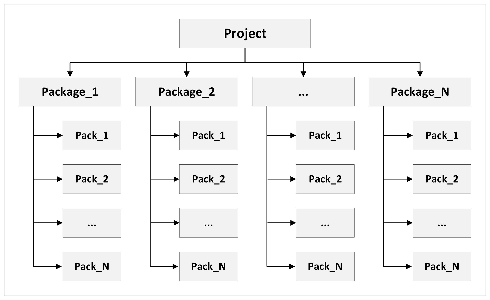

Building Resources
Resource build process refers to the process of packaging all game assets – including models, textures, levels, and their associated settings and game logic – into binary files. This approach helps reduce the number of files that need to be downloaded, speeding up the download process while keeping the data volume constant. It also protects our assets from being exploited by players for unintended purposes.
The game itself does not interact directly with the raw assets like models, textures, or level settings that we create. Instead, it only interacts with the compiled binary files. When a level is loaded, the necessary packages are fetched, decompressed, and the required information is extracted from them.
This article provides an overview of how to build assets, levels, and settings.
Parameters in .folder.blk Affecting the Building Process
Resource build process is governed by the rules defined in .folder.blk files.
See also
For more information, see .folder.blk.
For example, the following block specifies compression parameters for .tiff
textures.
virtual_res_blk{
find:t="^(.*)\.tiff$" // search for any .tiff files
className:t="tex" // assign the "texture" class
contents{ // processing details
convert:b=yes;fmt:t="DXT1|DXT5" // convert; use DXT1 or DXT5 format (if alpha is present)
mipFilter:t="filterKaiser";mipFilterAlpha:r=40;mipFilterStretch:r=2 /* mipmap compression using the Kaiser filter
(sharpens); with two parameters */
addrU:t="wrap";addrV:t="wrap" // define texture tiling behavior, wrap = repeat for repeating textures.
hqMip:i=0;mqMip:i=1;lqMip:i=2 /* define the displayed mip level based on graphics quality;
hq (high quality) uses the original texture,
mq uses mip level 1 (50% compression), lq uses mip level 2 (75% compression). */
}
}
There are numerous such processing blocks. Below, we’ll examine the key ones.
Global Export Parameters
export{
package:t="*" /* Specify the package to which the asset will be built
(a package is the highest level of asset grouping) */
forcePackage:t="*" /* Some packages might be automatically renamed by hardcoded logic.
This parameter enforces a specific name. Use this if you want to
ensure that certain assets are built into only one location. */
ddsxTexPackPrefix:t="tanks/" /* Specify the directory in the built resources where texture packs will be stored
(a pack is the next level of grouping within a package).
In this example, texture packs for tanks will be built
into the "tanks" directory rather than the general directory. */
ddsxTexPack:t="*name_src" /* Specify the name of the texture pack. If "*name_src" is used,
the name will be derived from the directory containing the textures.*/
gameResPack:t="aces.grp" /* Specify the name of the resource pack. If "*name_src" is used,
the name will be derived from the folder containing the textures. */
splitNotSeparate:b=true /* Indicate that textures should not be split between the base client and the full client.
In the base client, textures are downscaled to 512px so players can download a smaller
amount of data and start playing sooner. To maintain visual quality, some textures, like
those for tanks or hangars, are not downscaled but kept at normal quality. This flag is
set to true to prevent downscaling. The default is false, and it can be omitted. */
}
These are just a few examples. Let’s delve into the primary parameters.
About Packs and Packages
The hierarchy of resources can be illustrated as follows:
{kind=link}
In essence, a project can contain several packages, and each package can include multiple packs.
What Is Package?
A package typically serves as a container for resources that we want to distribute to or remove from the player’s environment. For example, we might bundle a specific location and its assets into a package for a particular event. Players download it, enjoy the event for a week, and once the event concludes, the package is removed from their resources.
Packages can also be used to release or sell add-ons. Instead of requiring players to download 20 GB of resources upfront, they can start with a minimal setup and quickly get into the game. Later, they can purchase additional content and download the necessary data from the relevant package.
See also
For more information, see Packages.
What Is Pack?
A pack is a component of a package where the assets are actually built. The logic for dividing assets into packs is straightforward:
When a location is loaded, the minimum possible number of packs should be fetched to optimize loading times.
Each pack should ideally be between 10 MB to 100 MB (with 100 MB being the absolute maximum) to ensure efficient unpacking.
Generally, we group similar assets together; for example, all vehicle props
might go into a pack named vehicles. Defensive structures like pillboxes,
trenches, bunkers, and barricades might be grouped into a pack called
fortifications.
If a pack becomes too large, we break it down into smaller groups. For example,
vehicles could be further divided into packs such as buses, trucks, and
cars.
Local Build
When you create a new asset, it needs to be tested locally in the game. The local client, like the player’s client, only understands built resources, so they need to be built before testing.
There are three types of builds:
Full Build: builds all resources.
Partial Pack Build: builds the specific pack containing the resource you need. This method is used when only a few assets have been modified – quick and efficient.
Partial Package Build: builds an entire package (a set of packs). Although this is a longer process, it can be more convenient in some cases, such as in daNetGame-based games, where packaging the resources this way might be preferable to building individual packs.
Local Full daBuild
The daBuild is a program executed via the dabuild.cmd batch file.
Important
Running dabuild.cmd will build all resources – this process can take hours. If
you only need to build a single resource for quick testing, use
dabuild_test.bat instead.
Building and Errors
In theory, all assets should be error-free. However, asset management initially relied heavily on manual checks, leading to human error and allowing issues to slip through. Over time, more automated checks were added to daBuild, which means that older assets that previously built without problems might now trigger errors. If an error occurs while building a pack, the build process for that pack is halted, and subsequent assets are not built. Errors are only detected during the build process, but they also interrupt it, making it time-consuming to identify and fix issues across all assets within a pack.
To address this, the -keep_building_after_error flag was introduced. If the
previous build resulted in errors, you can add this flag at the end of the batch
file command to allow daBuild to continue building all resources while logging
the errors.
Note
The -keep_building_after_error flag should not be used to ignore errors. The
build process for specific assets will still be interrupted, but it will move on
to the next asset in the pack rather than stopping at the first error. Once
you’ve collected error data, fix the assets and run the build without this flag
to ensure that daBuild completes successfully without issues.
Local Pack Build
Important
Building packs with daBuild will compile all packs matching a specified pattern.
For example, if you have a vehicles pack and a vehicles_modern pack,
building vehicles will compile both packs unless you specify the exact pack
extension (e.g., vehicles.grp to target only that pack).
Also, note that daBuild will build packs based on the package name. For example,
if you have several packs within the main package and you run a build using
the main pattern, it will build all packs within the main package. This
builds all packs within the main package, not the main package itself.
This happens because the final pack names always include the package name as a
prefix. For example, the vehicles pack in the main package will ultimately
be named main_vehicles.
To build a specific pack, open dabuild_test.bat in any text editor, and you
will see a line like this:
..\..\tools\dagor3_cdk\bin64\dabuild-dev.exe -target:PC ..\application.blk -packs_re:usa_gm -Q
Replace usa_gm with the name of the pack you need to build. The pack is
determined by the nearest .folder.blk file to the asset, containing lines
like:
export{
ddsxTexPack:t="gm_lvl_assets.dxp.bin"
gameResPack:t="gm_lvl_assets.grp"
}
The gm_lvl_assets is an example of the pack name into which the resources will
be built. It may vary – refer to your specific setup.
Important
Notice that there are two types of packs:
ddsxTexPack: exports texturesgameResPack: exports models
It’s possible for textures to be exported to one pack and models to another. For example:
export{
ddsxTexPack:t="gm_lvl_assets.dxp.bin"
gameResPack:t="locations.grp"
}
You need to build the packs corresponding to the resources you’ve modified. If you’ve changed textures, build the texture pack. If you’ve changed models, build the model pack. If both were changed, build both packs.
Local Package Build
Unlike packs, packages are more comprehensive and refer to self-contained volumes of resources that can be enabled or disabled with a “toggle”.
For example, in War Thunder:
pkg_main(or simply*): the default package where all assets are exported.pkg_dev: contains assets that should be built but not distributed to players.tomoe: a package for modifying certain symbols in countries where their original form is prohibited.Event packages are also occasionally used.
In daNetGame-based games, each location is its own package, which can be distributed to players independently.
In a .folder.blk file, the package entry looks like this:
export{
package:t="tomoe"
}
In War Thunder, local package builds are not common, as there are few packages, and packs are usually built instead. However, in daNetGame-based games, this is an extremely useful feature. There are two options for such builds.
Option 1: Building a Specific Package
In the daBuild batch file, write:
..\..\tools\dagor3_cdk\bin64\dabuild-dev.exe -target:PC ..\application.blk -package:package_name -Q
Replace package_name with the name of the package you need to build. This will
build the entire package with validation and checks.
Note
Package builds target specific packages, unlike packs, which work based on patterns. This isn’t usually an issue unless you’re trying to build textures.
For example, package_name and package_name_hq (high-quality textures used
for close-up views) are different packages. Building the package with
-package:package_name will only compile standard textures, not high-quality
ones. This could result in your changes appearing in low-quality textures but
reverting when viewed up close, as the high-quality textures haven’t been
updated.
To avoid this, you should either:
sequentially build both packages using one batch file:
-package:package_name -package:package_name_hq
or
create two separate batch files: one for the main resource package (non-HQ textures) and another specifically for HQ textures.
Option 2: Building a Specific Package and Its Dependencies
In daNetGame-based games, packages often have cross-references. When something changes in a “common” package, you need to ensure that everything works correctly in all other packages that reference it. Instead of doing a full build (which is very time-consuming), you can build the “common” package along with its dependent packages, which is much faster.
To do this, write the following in the daBuild batch file:
..\..\tools\dagor3_cdk\bin64\dabuild-dev.exe -target:PC ..\application.blk -package_and_deps:package_name -Q
The package_and_deps refers to the package and its dependencies.
Toggling Packages in settings.blk
Occasionally, you may need to enable or disable packages to test specific
scenarios (for example, disabling a package to verify that the game runs without
it). This is configured in the settings.blk file.
See also
For more information, see settings.blk.
For all projects, after modifying the package list, you must rebuild the
.vromfs.bin files.
In War Thunder, packages are enabled or disabled in the file located at
<engine_root>/<project_name>/develop/gameBase/_pc/settings.blk:
addons{
folder:t="content.hq/hq_tex"
folder:t="content.hq/pkg_cockpits"
folder:t="content/pkg_china"
folder:t="content.hq/pkg_china_hq"
folder:t="content/pkg_dev"
folder:t="content.hq/pkg_dev_hq"
folder:t="content/hc_pacific"
folder:t="content/pkg_user"
folder:t="content/pkg_local"
folder:t="content/tomoe"
folder:t="content.hq/tomoe_hq"
folder:t="content.hq/uhq_vehicles"
folder:t="content.hq/uhq_aircraft"
folder:t="content.hq/uhq_environment"
}
addons_no_check{
folder:t="content.hq/hq_tex"
folder:t="content.hq/pkg_cockpits"
folder:t="content/pkg_china"
folder:t="content.hq/pkg_china_hq"
folder:t="content/pkg_dev"
folder:t="content.hq/pkg_dev_hq"
folder:t="content/hc_pacific"
folder:t="content/pkg_user"
folder:t="content/pkg_local"
folder:t="content/tomoe"
folder:t="content.hq/tomoe_hq"
folder:t="content.hq/uhq_vehicles"
folder:t="content.hq/uhq_aircraft"
folder:t="content.hq/uhq_environment"
}
To disable a package, simply comment out the relevant lines in both blocks and
rebuild .vromfs.bin files.
It’s important to note that this file is responsible only for enabling or
disabling packages within the game; it does not handle the creation of packages.
The requirement for a package to be built by daBuild is defined in the
application.blk file within the packages{} block.
See also
For more information, see application.blk.
Local Build of a Specific Asset
The daBuild command with the -build:<asset>[:<out_file>] parameter allows
you to build a single asset into the specified file. This command does not
update packages, meaning the updated asset will not be added to any package.
Local Resource Build in Asset Viewer
Resources can also be built using the Asset
Viewer, which often speeds up
the process since daBuild via batch files can sometimes lag unpredictably.
See also
For more information on how to build using Asset Viewer, see Asset Viewer: Building Assets.
Local Vromfs Build
VROMFS stands for “Virtual Read-Only Memory File System”. Essentially, vromfs files are the “virtual configuration disk” for our game. They contain all the game’s operational settings that aren’t hard-coded.
When creating assets, you need to build vromfs primarily when you’re configuring asset destruction or fine-tuning the behavior of in-game vehicles. In other scenarios, vromfs building is typically unnecessary.
It’s crucial to remember that, by default, vromfs are delivered over the network
at the start of each mission, allowing for different settings per mission. If
you want to test something locally, ensure that your config.blk file has the
following line in the debug{} block: offlineBinaries:b=yes. Alternatively,
you can use disableNetwork:b=yes if network features are irrelevant to you.
For added security, you might want to include both.
Methods to Build Vromfs
Using
create_vrsroms.batThe
create_vrsroms.batfile located in the<engine_root>/<project_name>/develop/gameBasedirectory.This method is useful because it immediately indicates if there’s an issue with the settings by throwing an error.
Additionally, it provides a local log (
log_vrom) in the same directory, which helps you identify and resolve any problems.Using
aces_dev.exeTechnically, this tool does not build vromfs. However, if you have
vromfsPriority:b=noset in thedebug{}block of yourconfig.blk, all configuration files will be read directly fromdevelop/gameBaseinstead of from vromfs.This approach offers several advantages: there’s no need to wait for vromfs building after each change, and errors are logged in a more readable format.
Additionally, this method allows you to add the powerful
trackEnvChanges:b=yesline to yourconfig.blk, enabling you to tweak settings directly in-game. Although this doesn’t work for all settings, it’s particularly helpful for adjusting weather or visual elements, as you can see the changes in real-time without restarting the client.
Choose the method based on your experience. The in-game approach might be less convenient, but sometimes it’s essential to ensure everything behaves exactly as it would in production.
Local Build of Resources and Vromfs in the Open daEditor and Client
You can build resources and vromfs while the daEditor is open (though resource building might cause the daEditor to crash).
However, resources and vromfs cannot be built while the client is open.
If you find that resources aren’t building after you’ve closed the client – or
they seem to build, but the changes aren’t reflected in-game – open the Task
Manager and terminate any lingering aces_dev.exe processes.
Local Level Export
If you’re developing in-game vehicles that are loaded via missions, you can skip this section.
However, if you’re creating objects for maps, you’ll need to place them on the map and export the level to test them in-game. This process is done via the daEditor.
Level export is necessary when:
You’re working with prefabs. Prefabs are only included in the game during level re-export.
You’ve added a new asset that wasn’t previously on the level or removed something from the location.
Something has changed in object generation, and their placement needs to be updated.
If you’re only modifying render instances or textures, there’s no need to re-export the level – doing so would just waste time.
Once you have placed all your objects, save the level and follow these steps:
Open the Project menu.
Select Export to Game (PC format) (if needed).
Click OK on all subsequent dialog boxes.
Save the level binary file.
After the level build is complete, launch the game and verify the objects.